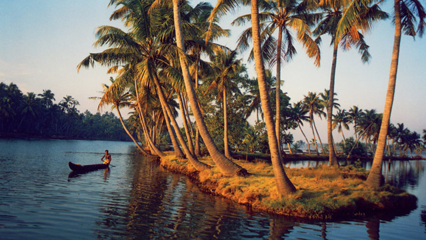

Kollam
(Est. - 1 Nov 1956)
The Kollam town (erstwhile Quilon) is the headquarters of the Kollam district. It is an old sea port and the district's highlight is its commercial trade with China and other countries since historical times. The district is bound by Alappuzha and Pathanamthitta on the North and Thiruvananthapuram on the South.
These are two unique destinations to visit in Kollam.

Ashtamudi Lake